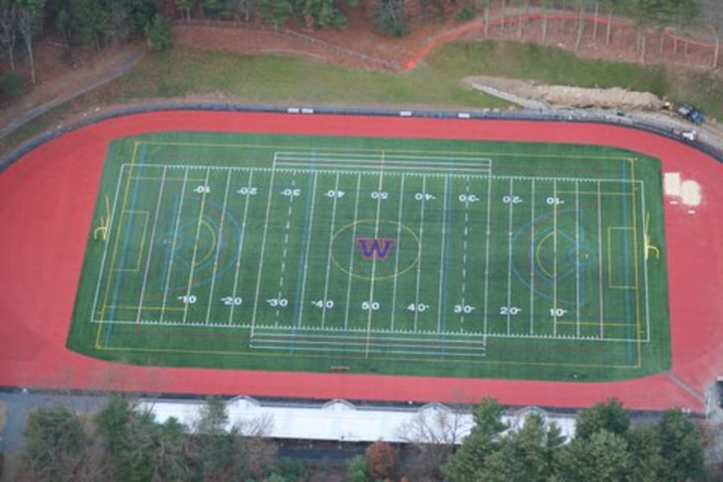

Monday, May 9th - Fall registration Open
Friday, August 19th- Football tryouts begin
Monday, August 22rd- All fall sports’ tryouts begin
Monday, October 3rd Winter registration opens and closes on Wednesday, November 23rd at 11AM
Monday, November 28th- Winter sports’ tryouts begin
Monday, January 30st- Spring Registration opens
Monday, March 20th- Spring Tryouts begin
Winter registration is now open on Family ID. A reminder that physicals must be dated within the last 13 months. Baseline ImPACT Testing will take place online, please see instructions in the Main Menu below .
Physical forms, proof of completion of the concussion course, baseline ImPACT testing and registration must be completed before a student can attend practices. Athletic fees are due for all sports prior to receiving a uniform. You can pay online or by check. Please wait until after tryouts before paying if you are trying out for a cut sport.
All paperwork must be in prior to 11AM on November 23. No paper work will be accepted until Tuesday November 29th.
THIS IS SUBJECT TO CHANGE, please follow @WalpoleAD on Twitter for the most up-to-date information.
Zack Donahue
donahuez24@wpsma.org
664-921-5638